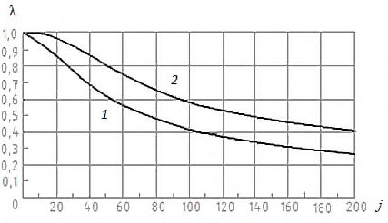
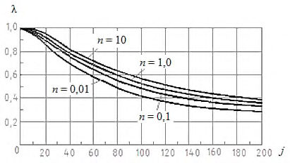
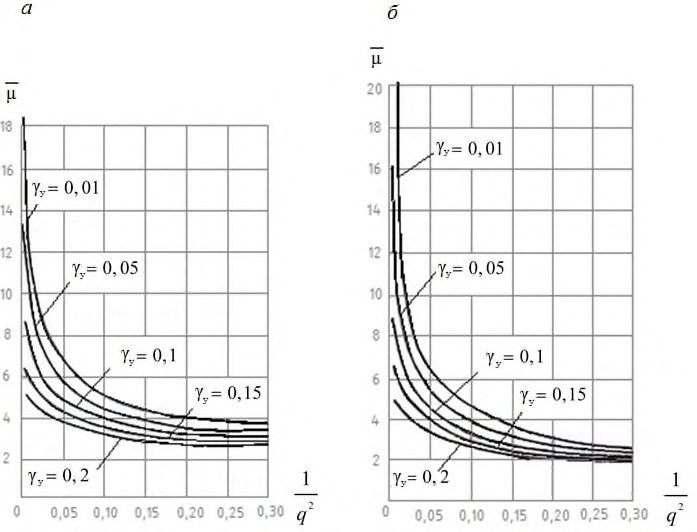
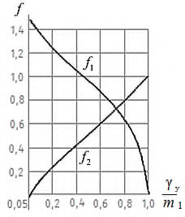
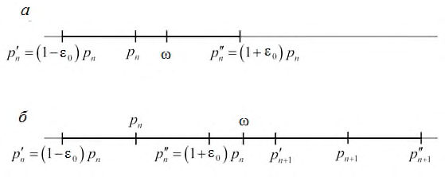
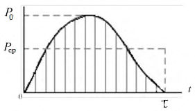

СП 413.1325800.2018 «Здания и сооружения, подверженные динамическим воздействиям»
О документе: разработчики, утверждение, регистрация, ключевые слова
СВОД ПРАВИЛ
СП 413.1325800.2018
Издание официальное
Москва 2018
- 1 ИСПОЛНИТЕЛЬ - АО «НИЦ «Строительство» - ЦНИИСК им. В.А. Кучеренко
- 2 ВНЕСЕН Техническим комитетом по стандартизации ТК 465 «Строительство»
- 3 ПОДГОТОВЛЕН к утверждению Департаментом градостроительной деятельности и архитектуры Министерства строительства и жилищнокоммунального хозяйства Российской Федерации (Минстрой России)
- 4 УТВЕРЖДЕН приказом Министерства строительства и жилищнокоммунального хозяйства Российской Федерации от 7 ноября 2018 г. № 707/пр и введен в действие с 8 мая 2019 г.
- 5 ЗАРЕГИСТРИРОВАН Федеральным агентством по техническому регулированию и метрологии (Росстандарт)
В случае пересмотра (замены) или отмены настоящего свода правил соответствующее уведомление будет опубликовано в установленном порядке. Соответствующая информация, уведомление и тексты размещаются также в информационной системе общего пользования - на официальном сайте разработчика (Минстрой России) в сети Интернет
© Минстрой России, 2018
Настоящий нормативный документ не может быть полностью или частично воспроизведен, тиражирован и распространен в качестве официального издания на территории Российской Федерации без разрешения Минстроя России
УДК ОКС 91.120.25
Ключевые слова: виброизоляция, импульсные воздействия, колебания зданий и сооружений, колебания конструкций, нормирование колебаний, периодические колебания, спектр воздействий
Руководитель организации разработчика
Генеральный директор А. В. Кузьмин АО «НИЦ «Строительство»
Руководитель разработки
Директор И. И. Ведяков
ЦНИИСК им. В. А. Кучеренко
Исполнитель
Заведующий лабораторией динамики М. В. Арутюнян сооружений ЦНИИСК им. В. А. Кучеренко
Введение
6 ВВЕДЕН ВПЕРВЫЕ
Настоящий свод правил разработан в соответствии с Федеральным законом от 30 декабря 2009 г. № 384-ФЗ «Технический регламент о безопасности зданий и сооружений», Федеральным законом от 27 декабря 2002 г. № 184 ФЗ «О техническом регулировании».
Свод правил выполнен авторским коллективом АО «НИЦ «Строительство» - ЦНИИСК им. В.А. Кучеренко (д-р техн. наук И.И. Ведяков , Ю.Т. Чернов , канд. техн. наук М.В. Арутюнян , О.В. Крылова, А.М. Арутюнян ).
1Область применения
2Нормативные ссылки
В настоящем своде правил использованы нормативные ссылки на следующие документы:
ГОСТ 5781-82 Сталь горячекатаная для армирования железобетонных конструкций. Технические условия
ГОСТ 7348-81 Проволока из углеродистой стали для армирования предварительно напряженных железобетонных конструкций. Технические условия
ГОСТ 10884-94 Сталь арматурная термомеханически упроченная для железобетонных конструкций. Технические условия
ГОСТ 13840-68 Канаты стальные арматурные 1×7. Технические условия СП 16.13330.2017 «СНиП II-23-81* Стальные конструкции»
СП 22.13330.2016 «СНиП 2.02.01-83* Основания зданий и сооружений»
СП 26.13330.2012 «СНиП 2.02.05-87 Фундаменты машин с динамическими нагрузками» (с изменением № 1)
СП 63.13330.2012 «СНиП 52-01-2003 Бетонные и железобетонные конструкции. Основные положения» (с изменениями № 1, № 2, № 3)
- СН 2.2.4/2.1.8.566-96 Производственная вибрация, вибрация в помещениях жилых и общественных зданий
Правила проектирования
The buildings and structures under dynamic actions. Design rules
2019-05-08
Примечание - При пользовании настоящим сводом правил целесообразно проверить действие ссылочных документов в информационной системе общего пользования -на официальном сайте федерального органа исполнительной власти в сфере стандартизации в сети Интернет или по ежегодному информационному указателю «Национальные стандарты», который опубликован по состоянию на 1 января текущего года, и по выпускам ежемесячного информационного указателя «Национальные стандарты» за текущий год. Если заменен ссылочный документ, на который дана недатированная ссылка, то рекомендуется использовать действующую версию этого документа с учетом всех внесенных в данную версию изменений. Если заменен ссылочный документ, на который дана датированная ссылка, то рекомендуется использовать версию этого документа с указанным выше годом утверждения (принятия). Если после утверждения настоящего свода правил в ссылочный документ, на который дана датированная ссылка, внесено изменение, затрагивающее положение, на которое дана ссылка, то это положение рекомендуется применять без учета данного изменения. Если ссылочный документ отменен без замены, то положение, в котором дана ссылка на него, рекомендуется применять в части, не затрагивающей эту ссылку. Сведения о действии сводов правил целесообразно проверить в Федеральном информационном фонде стандартов.
3Термины и определения
В настоящем своде правил применены следующие термины с соответствующими определениями:
- 3.1виброизолятор
- Основной элемент системы виброизоляции.
- 3.2виброизоляция
- Метод вибрационной защиты, основанный на ослаблении связей между источником возбуждения и защищаемым объектом.
- 3.3октавная полоса частот
- Полоса частот, у которой отношение верхней граничной частоты к нижней равно 2.
4Общие положения
4.1Основные положения
- а) планы и разрезы здания или сооружения;
- б) схемы размещения оборудования с указанием веса и способа закрепления на несущей конструкции, а также все полезные нагрузки;
- в) характеристики динамических нагрузок:
- направление и характер приложения к конструкции динамических нагрузок (сосредоточенные силы, моменты, распределенная нагрузка);
- сведения об изменении нагрузки во времени: для гармонической нагрузки - амплитуду и период; для периодической нагрузки - период и закон изменения нагрузки за период(ы), амплитуды и фазы составляющих гармоник; для однократной ударной или импульсной нагрузки - закон изменения во времени (форму импульса);
- направление и способ приложения импульса к конструкции; для периодических ударов и импульсов - период и закон изменения нагрузки за период; для нагрузок, возникающих при пуске и остановке машин, - скорости нарастания или убывания числа оборотов;
- если импульсная нагрузка возникает вследствие ударов тела по конструкции, а значение и форма импульса не известны, необходимо установить:
- вес ударяющего тела и форму его ударной части,
- значение и направление скорости тела в начале удара,
- коэффициент восстановления при ударе; и, по возможности, продолжительность удара;
- г) при отсутствии данных о динамических нагрузках, указанных в перечислении в) -сведения о машинах и установках, являющихся источниками колебаний, позволяющие определить эти нагрузки расчетным путем:
- типы машин, их число и способ крепления к несущим конструкциям;
- характеристики двигателя (вид двигателя, мощность, общий вес и вес ротора, число оборотов);
- число оборотов главного вала машины в минуту (или число ходов, ударов в минуту), а также скорость их нарастания при пуске и убывания при остановке машины;
- кинематическую схему машины; размеры и вес движущихся частей, моменты инерции; значения эксцентриситетов вращающихся частей, радиусов эксцентриков, радиусов кривошипов или ходов возвратно-поступательно движущихся частей; вес и скорости ударяющихся частей в момент удара, геометрические формы контактных поверхностей;
- д) среднее число пусков (включений) машины в сутки, среднюю продолжительность работы машины между двумя последовательными пусками;
- е) данные о характере колебаний оснований уже существующих зданий (максимальных значениях скоростей и ускорений);
- ж) сведения о пребывании людей на колеблющихся конструкциях с указанием среднего времени пребывания в процентах к рабочему времени;
- и) для строительной площадки - сведения о грунтах и возможных источниках колебаний, расположенных в радиусе до 700 м от проектируемого здания или сооружения, характер и уровень колебаний поверхности грунта, частотный состав.
- а) прочности, выносливости, деформативности конструкций;
- б) санитарно-гигиенических норм;
- в) технологий, связанных с производственным процессом; г) по ограничению уровней дополнительных осадок зданий вследствие воздействия вибраций, передающихся через конструкции на фундаменты.
- по ограничению уровней скоростей, которые определяют влияние колебаний на прочность конструкций (появление и развитие трещин, повреждения) - пункт 6.14.3 СП 22.13330.2016;
- ограничению уровней ускорений, провоцирующих развитие дополнительных осадок, и, как следствие, повреждений и разрушений конструкций.
Примечание - При отсутствии опытных данных допускается принимать w кр = 15 см/с 2 - для слабых грунтов, w кр = 30 см/с 2 - для плотных грунтов.
4.2Объемно-планировочные и конструктивные решения
Устанавливаемые вне зданий на самостоятельных фундаментах машины и установки (например, дизели, компрессоры, копры, молоты), являющиеся источниками колебаний, передающихся через грунт на близлежащие здания, следует располагать как можно дальше от жилых и общественных, а также от промышленных зданий.
Для каждого из указанных видов связей машин или оборудования с несущими конструкциями допускается два способа установки: а) непосредственно на конструкцию или виброизоляторы; б) на специальный постамент (бетонная или железобетонная подушка, металлическая рама и т. д.), опирающийся на конструкцию или виброизоляторы или являющийся частью конструкции.
Примечания
1 Во избежание горизонтальных смещений свободно стоящих или виброизолированных машин следует установить устройства креплений или боковых упоров, препятствующих этим смещениям.
2 Размеры и вес постамента при установке на виброизоляторы, кроме обычных конструктивных требований, определяются динамическим расчетом для обеспечения надлежащего эффекта виброизоляции.
При наличии машин категории динамичности IV (таблица 4.7) следует применять монолитные и сборно-монолитные железобетонные конструкции.
При проектировании сборных железобетонных перекрытий следует предусматривать соответствующие конструктивные мероприятия, обеспечивающие связь плит друг с другом. Деревянные перекрытия в виде настилов по металлическим балкам под машины с динамическими нагрузками выше категории динамичности I применять не следует.
Жесткость каркасно-панельных зданий следует повышать путем соответствующей раскладки стеновых панелей.
Таблица 4.1 Сводная таблица для определения области применения арматурных сталей в железобетонных конструкциях, подвергающихся действию динамических нагрузок
| Химический состав (марка) стали; нормативные документы, регламентирующие качество арматуры | Диаметр, мм | Температурные условия эксплуатации конструкций | Температурные условия эксплуатации конструкций | Температурные условия эксплуатации конструкций | Температурные условия эксплуатации конструкций | |
|---|---|---|---|---|---|---|
| Вид и класс арматуры | в отапливаемых зданиях | на открытом воздухе и в неотапливаемых зданиях при температуре, о С | на открытом воздухе и в неотапливаемых зданиях при температуре, о С | на открытом воздухе и в неотапливаемых зданиях при температуре, о С | ||
| до -30 | ниже -30 до -40 | ниже -40 до -55 | ||||
| Арматурная сталь класса А-І (А240) | Ст3кп Ст3пс Ст3сп по ГОСТ 5781 | 6-40 | + + + | + + + | + + - | + - - |
| Арматурная сталь класса А-ІІІ (А400) | 35ГС 25Г2С 32Г2Рпс по ГОСТ 5781 | 6-40 | + + + | + + + | - + - | - + 1) - |
|---|---|---|---|---|---|---|
| Сталь арматурная термомеханически упрочненная для железобетонных конструкций класса Ат500С | Ст5сп Ст5пс по ГОСТ 10884 | 6-40 | + + | + + | + + | + 1) + |
| Сталь арматурная термомеханически упрочненная для железобетонных конструкций класса Ат600С (Ат-IVC) | 25Г2С 35ГС 28С 27ГС по ГОСТ 10884 | 10-40 | + + + + | + + + + | + - + - | + - - - |
| Арматурная сталь класса А-ІV (А600) | 20ХГ2Ц по ГОСТ 5781 | 10-32 (36-40) | + | + | + | + 2) |
| Сталь арматурная термомеханически упрочненная для железобетонных конструкций класса: Ат600 Ат800 Ат1000 | 20ГС 20ГС, 20ГС2, 08Г2С, 10ГС2, 28С, 25Г2С, 22С 20ГС 20ГС2, 25С2Р по ГОСТ 10884 | 10-40 10-32 | + 2) + 2) + 2) | + 2) + 2) + 2) | + 2) + 2) + 2) | + 2) + 2) + 2) |
| Проволока арматурная ВР-2 класса прочности 1400, 1500 | По ГОСТ 7348 | - | + | + | + | + |
| Канат арматурный (пряди) К7 класса прочности 1400-1700 | По ГОСТ 13840 | - | + | + | + | + |
4.3Динамические характеристики материалов конструкций
Значение модуля сдвига принимают равным 0,35 от модуля Юнга.
Примечания
1 При расчете ограждающих и несущих конструкций на кратковременные однократные динамические воздействия, не связанные с нормальной работой машин, установок и оборудования (например, при авариях), допускается развитие пластических деформаций и разрушение отдельных элементов конструкций, если это не вызывает необратимых последствий. При этом следует учитывать увеличение пределов прочности и текучести при высоких скоростях деформирования.
- 2 При проведении динамических расчетов несущих конструкций в качестве модуля упругости Е следует принимать: для стальных конструкций - модуль продольной упругости; бетонных и железобетонных конструкций - модуль упругости бетона при сжатии; каменных и армокаменных конструкций - начальный модуль упругости кладки; деревянных конструкций E = 10 МПа независимо от породы древесины.
Для модуля сдвига кирпичной кладки и бетонных панелей ограждения допускается принимать приближенное значение G = 0,3 E , где E - начальный модуль упругости кирпичной кладки.
Дифференциацией коэффициента неупругого сопротивления по категориям динамичности (таблица 4.2) приближенно учитывается зависимость поглощения энергии вследствие внутреннего трения от динамических напряжений в конструкциях.
Таблица 4.2 Значения коэффициента γ
| Значения коэффициента γ | Значения коэффициента γ | |
|---|---|---|
| Материал | при динамической нагрузке категорий I и II | при динамической нагрузке категорий III и IV |
| Железобетон: ненапряженный | 0,05 | 0,1 |
| предварительно напряженный | 0,025 | 0,05 |
| Прокатная сталь | 0,01 | 0,025 |
| Кирпичная кладка | 0,04 | 0,08 |
| Дерево | 0,03 | 0,05 |
где γ n - коэффициент неупругого сопротивления n -го элемента или составной части конструкции;
Dn - жесткость n -го элемента или составной части; m - число элементов или составных частей конструкции;
D - суммарная жесткость, вычисляемая по формуле
Жесткость составных частей для монолитного сечения следует определять относительно нейтральной оси всего сечения, для немонолитного - относительно своей нейтральной оси.
где S ≥ 0 - отношение абсолютной величины наибольшего динамического напряжения (усилия) к абсолютной величине статического напряжения (усилия).
Жесткость изгибаемых элементов железобетонных конструкций, применяемых в промышленных зданиях под машины и установки с динамическими нагрузками, при определении динамических перемещений и напряжений допускается определять по формуле
где E σ - модуль упругости бетона;
J - момент инерции поперечного сечения элемента (для армированных конструкции без учета арматуры).
4.4Динамические нагрузки от машин и оборудования
- где m - масса возвратно-поступательно движущихся или вращающихся частей машины, вычисляемая по формуле
- здесь G - номинальный вес возвратно-поступательно движущихся или вращающихся частей машины; g - ускорение силы тяжести;
- e - амплитуда перемещений центра масс, равная радиусу эксцентрика, половине хода в машинах с возвратно-поступательным движением массы, нормальному эксцентриситету вращающейся массы в ротационных машинах или нормальному приведенному эксцентриситету при сложном движении частей;
- ω - круговая частота вращения главного вала машины, рад/с, вычисляемая по формуле
здесь N - число оборотов главного вала машины в 1 мин.
Для машин с конструктивно неуравновешенными движущимися частями (например, для машин с эксцентриковыми механизмами) значение G определяют как сумму весов движущихся частей, а e - как радиус эксцентрика.
Для машин с номинально уравновешенными вращающимися частями (центрифуги, вентиляторы и т. п.) значение G представляет собой полный вес вращающихся частей (например, в центрифугах - вес барабана и вала вместе с заполнением), а значение e - эксцентриситет, равный расчетному смещению центра вращающихся масс от оси вращения.
Нормативное значение амплитуд вертикальной и горизонтальной составляющей нагрузок Rny , Rnx вычисляют по формуле
где μ - коэффициент пропорциональности, приведенный в таблице 9 СП 26.13330.2012.
Примечания
1 При τ > 2,5 T 1, расчет конструкции на действие нагрузки P ( t ) следует сводить к ее статическому расчету на действие эквивалентной нагрузки χ P 0, где P 0 - максимальное значение переменной нагрузки, а χ - коэффициент, определяемый по таблице 4.3 в зависимости от вида функции P ( t ) и относительной продолжительности действия силы τ' = τ/ T 1, стремящейся с увеличением τ к 1 или 2.
- 2 Расчет конструкции на внезапную нагрузку или разгрузку следует проводить также согласно примечанию 1. В этом случае P 0 - величина приложенной или снятой нагрузки, χ = 2 для внезапной нагрузки и χ = 1 - для внезапной разгрузки.
Мгновенный импульс, эквивалентный кратковременному по начальной амплитуде i -го тона собственных колебаний конструкции Si , вычисляют по формуле
Таблица 4.3 Значения коэффициентов ε̅ i , χ

| 0,70 | 0,455 | - | 0,569 | - | 0,631 | - | 0,625 | - | 0,667 | - | 0,724 | - |
|---|---|---|---|---|---|---|---|---|---|---|---|---|
| 1,00 | 0,318 | - | 0,369 | - | 0,494 | - | 0,433 | - | 0,480 | - | 0,543 | - |
| 1,40 | 0,227 | - | 0,253 | - | 0,379 | - | 0,277 | - | 0,306 | - | 0,365 | - |
| 1,80 | 0,177 | - | 0,192 | - | 0,307 | - | 0,192 | - | 0,208 | - | 0,252 | - |
| 2,00 | 0,159 | - | 0,172 | - | 0,280 | - | 0,167 | - | 0,184 | - | 0,212 | - |
| 3,0 | 0,106 | 2 | 0,112 | 1,05 | 0,195 | 1,84 | 0,104 | 1,2 | 0,117 | 1,1 | 0,119 | 1,12 |
| 6,0 | 0,053 | 2 | 0,054 | 1,03 | 0,102 | 1,92 | 0,045 | 1,09 | 0,056 | 1,05 | 0,055 | 1,03 |
| 9,0 | 0,035 | 2 | 0,036 | 1,02 | 0,069 | 1,94 | 0,029 | 1,06 | 0,037 | 0,037 | 0,035 | 1,01 |
| 10,0 | 0,032 | 2 | 0,032 | 1,02 | 0,062 | 1,95 | 0,026 | 1,05 | 0,033 | 1,03 | 0,032 | 1,01 |
| 15,0 | 0,021 | 2 | 0,021 | 1,01 | 0,042 | 1,97 | 0,017 | 0,04 | 0,021 | 1,02 | 0,021 | 1,0 |
| 20,0 | 0,016 | 2 | 0,016 | 0,01 | 0,031 | 1,97 | 0,013 | 1,03 | 0,016 | 1,02 | 0,016 | 1,0 |
Примечание - ε̅ i < 1 - коэффициент, зависящий от отношения τ' i = τ / Ti продолжительности кратковременного импульса к периоду Ti собственных колебаний конструкций по i -му тону, а также от формы импульса; фактическую величину S , определяемую по форме импульса, вычисляют по формуле (4.8).
где m - масса ударяющего тела;
- v 0 - скорость ударяющего тела в начале удара, нормальная к поверхности конструкции;
- ν -коэффициент восстановления при ударе, равный отношению нормальных составляющих скоростей ударяющего тела в конце и начале удара. При 0< ν < 1 удар называется упругим, а при ν = 0 абсолютно неупругим (см. таблицу 4.4).
Таблица 4.4 Ориентировочные значения коэффициента ν восстановления при ударе
| Материал и форма ударяющего тела | Материал и форма ударяющего тела | Материал и форма ударяющего тела | Материал и форма ударяющего тела | Материал и форма ударяющего тела |
|---|---|---|---|---|
| твердые металлы (стали, сплавы) | твердые металлы (стали, сплавы) | медь, алюминий, дерево, бетон, камень, твердые пластмассы | медь, алюминий, дерево, бетон, камень, твердые пластмассы | Мягкие пластические материалы (асфальт, глины, смолы, масла |
| шар | параллелепипед | шар | параллелепипед | и пр.) |
| Сталь | 0,6 | 0,35 | 0,4 | 0,25 | 0 |
|---|---|---|---|---|---|
| Бетон | 0,35 | 0,15 | 0,25 | 0,1 | 0 |
| Камень | 0,4 | 0,2 | 0,3 | 0,15 | 0 |
| Дерево | 0,55 | 0,3 | 0,4 | 0,2 | 0 |
| Ксилолит | 0,2 | 0,1 | 0,1 | 0,05 | 0 |
| Асфальт | 0 | 0 | 0 | 0 | 0 |
Таблица 4.5 Значения коэффициента надежности по нагрузке k д
| Тип машины | Коэффициент надежности по нагрузке k д |
|---|---|
| Машины с конструктивно неуравновешенными, движущимися частями | 1,3 |
| Машины с номинально уравновешенными, а фактически неуравновешенными движущимися частями | 4 |
| Машины ударного и импульсного действия | 1 |
При сплошном опирании машины на перекрытие, а также при любом опирании машины на постамент динамические силы и моменты следует считать приложенными к перекрытию сосредоточенно в одной точке, являющейся проекцией точки приложения инерционной силы R или импульса S на плоскость перекрытия.
Для виброизолированных машин динамические силы следует принимать приложенными к перекрытию, при этом под опорами машин установлены виброизоляторы. Амплитуда силы, передающейся через каждый виброизолятор на конструкцию, равна произведению амплитуды колебаний станины, определенной в месте расположения этой опоры, и жесткости виброизоляторов в соответствующем направлении.
При одновременной работе нескольких машин, расчетные нагрузки от которых связаны с экстренными режимами, необходимо определять следующим образом. Если j - общее число машин, то расчет следует проводить на нормативную нагрузку от j -j 1 машин и на расчетную нагрузку от j 1 машин, где j 1 = 1 при j = 1÷10; j 1 = 2 при j = 11÷20 и т. д. При этом коэффициент надежности по нагрузке вводится для тех машин, которые расположены невыгодным образом или имеют наибольшие нормативные динамические нагрузки.
Таблица 4.6 Группы машин и установок по частотности
| Тип машин и установок | Тип машин и установок | Тип машин и установок | |
|---|---|---|---|
| Группа | Частота нагрузки или преобладающей гармоники, цикл/мин | Характеристика частотности | Продолжительность импульса, с |
| 1 | До 400 до | Низкочастотные | Более 0,1 От 0,1 до |
| 2 | От 400 2000 | Среднечастотные | 0,005 |
| 3 | Более 2000 | Высокочастотные | Менее 0,005 |
| Примечания 1 Под периодическим воздействием следует понимать «спокойные» периодические нагрузки. | Примечания 1 Под периодическим воздействием следует понимать «спокойные» периодические нагрузки. | Примечания 1 Под периодическим воздействием следует понимать «спокойные» периодические нагрузки. | Примечания 1 Под периодическим воздействием следует понимать «спокойные» периодические нагрузки. |
В таблице 4.7 приведены нормативные значения динамических нагрузок от машин и установок различной категории динамичности, вызывающих вертикальные колебания конструкций здания. При расчете зданий на действие горизонтальных возмущающих нагрузок (т. е. при рассмотрении горизонтальных колебаний зданий), а также в других случаях, когда трудно установить категорию динамической нагрузки, в предварительных расчетах для определения значения коэффициента γ по таблице 4.2 следует принимать категорию динамичности:
- а) при определении динамических перемещений - I, II;
- б) при определении динамических напряжений - III, IV.
Таблица 4.7 Классификация машин, устанавливаемых в промышленных зданиях по категориям динамичности
| Значение нормативной нагрузки | Значение нормативной нагрузки | ||
|---|---|---|---|
| Категория динамичности | Характеристика динамичности | Амплитуда инерционной силы (при гармонической нагрузке), кН | Эквивалентный мгновенный импульс (при импульсной нагрузке), кН∙с |
| I II III IV | Малая Средняя Большая Очень большая | До 0,10 От 0,10 до 1,00 От 1,00 до 10,00 Более 10,00 | До 0,01 От 0,01 до 0,10 От 0,10 до 1,00 Более 1,00 |
- 1 Значение эквивалентного мгновенного импульса следует определять для основного тона конструкции путем умножения нормативного значения импульса на коэффициент ε̅ i , определяемый по таблице 4.3 в зависимости от отношения продолжительности импульса к периоду основного тона T конструкции.
- 2 При периодической нагрузке в качестве значения нормативной нагрузки в таблице следует принимать наибольшую из амплитуд гармоник.
- 3 Если в одном из смежных пролетов перекрытия установлено несколько машин, то категории машин следует определять для суммарного значения нормативной нагрузки по соответствующей графе таблицы.

Рисунок 4.1 - График для определения коэффициента синфазности λ для машин и установок с асинхронными двигателями n - среднее число включений в сутки; j - число машин

Рисунок 4.2 - График для определения коэффициента синфазности λ для машин и установок с синхронными двигателями
4.5Нагрузки, передающиеся через виброизоляторы
- а) при рабочем режиме машины;
- б) при прохождении через резонанс виброизолированной установки в режимах пуска или остановки машины.
Составляющие амплитуды возмущающей силы Pi , передающейся через i -й виброизолятор, определяют по формулам
где axi , ayi , azi - амплитуды вынужденных колебаний i -го виброизолятора в направлении осей x , y , z ; kxi , kyi , kzi - жесткость i -го виброизолятора в направлении осей x , y , z .
В случае периодических воздействий Pi , axi и т. д. необходимо обозначить соответственно амплитуды возмущающей силы и амплитуды колебаний i -го виброизолятора по каждой из учитываемых гармоник.
где ax , ay , az - амплитуды колебаний центра жесткости виброизолированной машины в направлении осей координат;
Kx , Ky , Kz - суммарные жесткости виброизоляторов в направлении осей x , y , z .
Составляющие возмущающего момента М относительно осей координат, проходящих через центр жесткости виброизоляторов, определяют по формулам
где φ0 x , φ 0 y , φ 0 z - амплитуды вращательных колебаний установки относительно координатных осей;
K φ x , K φ y , K φ z - угловые жесткости всех виброизоляторов относительно тех же осей.
Если при этом виброизолируемая установка возбуждает только вертикальные колебания, то амплитуду гармонической нагрузки P (или отдельной гармоники в случае периодической нагрузки), передающейся на конструкцию через виброизоляторы, определяют по формуле
- где Q -амплитуда гармонической силы (или отдельной гармоники), развиваемой машиной и действующей на виброизолируемую установку;
- α = ω/ p у - отношение круговой частоты вынужденных колебаний (возмущающей нагрузки) к круговой частоте собственных колебаний виброизолируемой установки.
Примечание - Если основная гармоника периодической нагрузки, действующей на виброизолированную установку, является преобладающей, то высшие гармоники допускается не учитывать, считая, что через виброизоляторы передается только гармоническая нагрузка с частотой и амплитудой основной гармоники.
где R , ω - амплитуда и круговая частота гармонической нагрузки в рабочем режиме; p у - круговая частота собственных колебаний установки; γ y - коэффициент неупругого сопротивления виброизоляторов; ε - абсолютная величина постоянного углового ускорения, рад/с 2 ; μ̅ - коэффициент передачи, определяемый по графикам (рисунок 4.3) или по формуле

а - остановочный режим; б - пусковой режим
Рисунок 4.3 - Графики для определения коэффициента передачи при переходе через резонанс
Параметры f 1 и f 2 следует определять по графикам (рисунок 4.4) в зависимости от величины γу / m 1 .
Рисунок 4.4 - График для определения коэффициентов f 1 и f 2

В формулах (4.14), (4.15) знак плюс относится к пусковому режиму, знак минус - к остановочному. Расчет проводят на тот режим, при котором абсолютная величина углового ускорения меньше. При близких ускорениях в обоих режимах следует рассматривать остановочный режим.
Формула (4.13) справедлива для машин и установок, инерционные силы которых создаются в результате движения неуравновешенных масс и определяются по формуле (4.5) или аналогичным формулам. Если амплитуда динамической нагрузки Q остается постоянной при пуске и остановке, то амплитуду, передающуюся при переходе через резонанс нагрузки, следует вычислять путем умножения Q на коэффициент передачи , определяемый по формуле (4.12) или из графиков на рисунке 4.3, т. е. P = μ̅ Q .
Если виброизолированная машина или установка развивает периодическую нагрузку, то расчет при переходе через резонанс следует производить на преобладающую гармонику.
Примечание - Виброизоляцию машин ударного действия можно считать эффективной, если удовлетворяется условие p 1 ≤ 5 p 01 , где p 1 , p 01 -частоты собственных колебаний соответственно виброизолированного и невиброизолированного оборудования.
5Основные расчетные положения
Для конструкций, на которых находятся люди, следует проводить проверку уровня колебаний исходя из требований санитарных норм, а также проверку прочности с учетом выносливости.
Примечания
- 1 Проверка гибких сжатых элементов на динамическую устойчивость в настоящем своде правил не предусматривается.
- 2 Расчет на выносливость следует проводить только при действии систематических динамических нагрузок (4.4.2).
- а) расчет изгибаемых элементов на прочность проводят по условию
где M р с - изгибающий момент от расчетной статической нагрузки;
- M р д - изгибающий момент от расчетной динамической нагрузки (с тем же знаком, что и M р с );
M р - расчетное значение изгибающего момента конструкции.
Примечание - Для изгибаемых элементов при проверке напряжений в направлении главных растягивающих усилий необходимо учитывать динамические нагрузки категорий динамичности III и IV. При этом к поперечной силе от расчетных статических нагрузок следует прибавлять поперечную силу от расчетных динамических нагрузок. б) при расчете сжато-изогнутых и сжатых элементов на прочность и статическую устойчивость к расчетным статическим нагрузкам необходимо прибавлять расчетные динамические нагрузки, определяемые согласно 4.4.13.
где M н с - изгибающий момент от нормативной статической нагрузки;
M р д - изгибающий момент от расчетной динамической нагрузки (с тем же знаком, что и M н с );
- M вын - предельный изгибающий момент при расчете на выносливость, определяемый по расчетному пределу выносливости.
Примечания
1 Для железобетонных изгибаемых элементов, а также для внецентренно сжатых и внецентренно растянутых элементов следует проводить проверку напряжений в направлении главных растягивающих усилий при действии нагрузок категорий динамичности III и IV. При этом главные растягивающие напряжения от нормативной статической и нормативной динамической нагрузок в предварительно напряженных элементах не должны превышать расчетного предела выносливости материала, определяемого согласно указаниям настоящего свода правил, а в элементах с ненапрягаемой арматурой в случае, если главные растягивающие напряжения превышают расчетный предел выносливости, их равнодействующая по нейтральной оси должна быть полностью воспринята поперечной и отогнутой арматурой, напряжения в которой не должны превышать расчетного предела выносливости.
2 Условия (5.1), (5.2) должны выполняться для напряжений и внутренних усилий обоих знаков.
- а) от машин и установок категории динамичности I;
- б) машин и установок категории динамичности II, устанавливаемых на виброизоляторы;
- в) для изгибаемых элементов перекрытий, площадок и т. п. от машин и установок всех категорий динамичности, если наибольшее динамическое перемещение от расчетных нагрузок за вычетом перемещений опор не превышает 1/50000 пролета элемента;
- г) колонн и стен здания, а также стоек площадок и этажерок от машин и установок всех категорий динамичности, если разность горизонтальных динамических перемещений от расчетных нагрузок нижнего и верхнего конца колонны (стены, стойки) в пределах этажа не превышает 1/50000 высоты этажа;
- д) элементов перекрытий при гармонических нагрузках от машин категории динамичности II, относящихся к первой и третьей группе по частотности;
- е) колонн и стен зданий, а также стоек площадок и этажерок при горизонтальных гармонических нагрузках категории динамичности II, относящихся ко второй и третьей группе по частотности.
Проверку перемещений элементов конструкции, вызванных действием импульсных нагрузок, допускается не проводить:
- а) когда на перекрытии не требуется присутствие персонала;
- б) для одиночных импульсов и ударов;
- в) импульсных нагрузок категории I, передающихся через виброизоляторы;
- г) вертикальных элементов здания.
Допустимые значения перемещений, скоростей и ускорений приведены в [1].
где 0 0 , - допускаемые амплитуды ускорения и скорости соответственно;
- n - частота вынужденных колебаний, Гц.
где n 1 = p 1 / 2π - частота колебаний перекрытия, Гц (кол/с), p 1 - круговая частота в рад/с;
0 0 , - допускаемые амплитуды соответственно скорости, мм/с, и ускорения, мм/с 2 , при установившихся гармонических колебаниях с частотой n 1 ;
1 ≥ d ≥ 0 - параметр, повышающий допускаемую амплитуду колебаний, вычисляемый по формуле
где γ - коэффициент внутреннего трения, принимаемый по таблице 4.2;
1 1 1 n T = - период колебания перекрытия;
0 1 T T - период повторных импульсов; при 0 1 T T параметр d принимается равным нулю.
При отсутствии данных о допускаемых значениях 0 0 0 , , a следует руководствоваться СН 2.2.4/2.1.8.566.
Таблица 5.1 Характеристика воздействия колебаний на людей в зависимости от скорости и ускорения гармонических перемещений
| Характеристика воздействия колебаний на людей | Предельное ускорение колебаний w 0 , мм/с 2 для частот от 1 до 10 Гц | Предельная скорость колебаний 0 , мм/с для частот от 1 до 100 Гц |
|---|---|---|
| Не ощутимы | 10 | 0,16 |
| Слабо ощутимы | 40 | 0,64 |
| Хорошо ощутимы | 125 | 2 |
| Сильно ощутимы (мешают) | 400 | 6,4 |
| Вредны при длительном воздействии | 1000 | 16 |
| Безусловно вредны | Более 1000 | Более 16 |
Примечание - Субъективная оценка колебаний при частотах более 5 Гц во многих случаях позволяет подтвердить или исключить, в зависимости от назначения помещений, в соответствии с СН 2.2.4/2.1.8.566-96 (таблицы 3-10), необходимость инструментального обследования колебаний.
где ω̅ = ω n - круговая частота того колебания, для которого величина n n z ) ( 0 (при ω̅ ≥ 20π) или 2 ) ( 0 n n z (при ω̅ < 20π) имеет наибольшее значение.
При периодической нагрузке проверку перемещений следует проводить как для гармонических колебаний, при этом в качестве амплитуды перемещений необходимо принимать наибольшее перемещение, а частоту следует определять по формулам (5.6) или (5.7), где ( ) 0 n z и ω n - амплитуды и круговые частоты составляющих гармоник.
При импульсном возбуждении колебаний конструкций с разными собственными частотами p 1 и p 2, отличающихся менее чем вдвое, в качестве средней амплитуды перемещений допускается принимать:
- где z 1 - наибольшее перемещение, соответствующее форме колебаний с круговой частотой p 1 ;
- z 2 - наибольшее перемещение, соответствующее форме колебаний с круговой частотой p 2 ;
- p ̅ - круговая частота того колебания, для которого величина znpn (при pn ≥ 20π) или znpn 2 (при pn < 20π) имеет наибольшее значение, а в качестве круговой частоты принимается величина p ̅ .
При отношении частот составляющих колебаний более двух проверку перемещений следует проводить раздельно для каждого колебания.
где z 1 , z 2 , z 3 - составляющие амплитуды перемещений в направлении ортогональных осей координат.
- а) для машин всех категорий динамичности, когда не требуется длительное присутствие людей;
- б) машин категории динамичности II, устанавливаемых на виброизоляторы;
- в) машин и установок категории динамичности II второй и третьей группы по частотности, создающих горизонтальные нагрузки.
Кроме того, проверку физиологического воздействия колебаний на людей не проводят для машин и установок, создающих эпизодические нагрузки малой продолжительности (непродолжительные периодические нагрузки, одиночные импульсы или удары, нагрузки при переходных режимах и т. п.).
Проверку воздействия колебаний на людей при переходе через резонанс проводить не следует. Расчет на выносливость при переходе через резонанс необходимо проводить только для машин, имеющих более пяти пусков и остановок в сутки. Расчет следует проводить на тот режим, при котором скорость прохождения через резонанс наименьшая. При близких скоростях расчетным считается остановочный режим. В расчетах по приближенным расчетным схемам допускается ограничиваться высшей из собственных частот, для которых имеет место прохождение через резонанс.
Расчет конструкции при переходе через собственный резонанс по приближенным расчетным схемам допускается проводить на гармоническое воздействие с круговой частотой r p (где r p - высшая из собственных частот) и амплитудой P , равной
где R - амплитуда гармонической нагрузки в рабочем режиме; ω - круговая частота вынужденных колебаний в рабочем режиме;
- коэффициент передачи, определяемый но графикам (см. рисунок 4.3) для круговой частоты r p , или по формуле
где γ - коэффициент неупругого сопротивления материала конструкции; 1 f и 2 f - параметры, определяемые по графикам (см. рисунок 4.4).
В формулах (5.11), (5.12) знак плюс относится к пусковому режиму, минус - к остановочному.
Если амплитуда R нормативной инерционной силы машины или установки не зависит от частоты вынужденных колебаний и не изменяется при пуске и остановке, то расчет конструкций при переходе через резонанс следует производить на гармоническую нагрузку с амплитудой p = μ̅ R γ и круговой частотой r p .
Расчет конструкции, поддерживающей виброизолированную установку, при переходе через резонанс установки, т. е. при совпадении частоты вынужденных колебаний с частотой собственных колебаний установки в переходном режиме, следует проводить на гармоническую нагрузку, параметры которой определяют согласно 4.5.
- а) если рабочий режим машины или установки является резонансным для поддерживающей конструкции, т. е. частота вынужденных колебаний в рабочем режиме попадает в одну из частотных зон конструкции;
1) определяют и классифицируют динамические нагрузки согласно положениям раздела 4;
2) определяют частоты и формы собственных колебаний конструкций согласно положениям раздела 4;
3) определяют амплитудные значения динамических перемещений согласно указаниям раздела 5 и проверяют выполнение физиологических требований по ограничению колебаний;
4) определяют максимальные значения внутренних усилий в конструкциях (изгибающих моментов, поперечных сил) и проводят расчет на прочность и выносливость согласно положениям раздела 5 и приложения Б.
При проведении динамических расчетов в программных комплексах, в которых используют другую последовательность расчета (например, опущено определение собственных частот и др.), алгоритм должен учитывать все особенности расчета, связанные с расширением частотных зон, определением категории динамической нагрузки и т. д.
6Расчетные схемы
Примечание - Если наибольшие перемещения превышают 0,1 мм, то расчет необходимо проводить по двум различным схемам: с учетом жесткости соединений вследствие сухого трения и без него.
- а) по схеме с жесткими соединениями вследствие сухого трения (6.2) для железобетонных и металлических балок при уложенном по балкам сборном настиле и для железобетонных и металлических балок при уложенной по балкам монолитной железобетонной плите - момент инерции таврового сечения с шириной плиты, принимаемой равной расстоянию между осями балок, но не более половины пролета балки;
- б) по схеме, не учитывающей сухое трение для железобетонных и металлических балок:
- при уложенном по балкам сборном настиле - момент инерции поперечного сечения балки;
- при уложенной по балкам монолитной железобетонной плите - сумма моментов инерции сечений балки и плиты, при этом расчетную ширину сечения плиты следует принимать равной расстоянию между осями балок, но не более половины пролета балок.
Для балок ребристого монолитного перекрытия необходимо принимать момент инерции монолитного таврового сечения с шириной полки, указанной в этом пункте; для балочных плит - момент инерции поперечного сечения плит.
Примечания
- 1 Если металлические балки перекрытия обетонированы железобетонной плитой поверху или понизу, то перекрытие следует рассматривать как ребристое монолитное.
- 2 Таким же образом следует определять моменты инерции железобетонных покрытий и других конструкций, имеющих аналогичные расчетные схемы.
При расчете крупнопанельных плит, плит безбалочных перекрытий и т. д. следует определять цилиндрическую жесткость плиты.
Если постамент под машину или установку монолитно связан с перекрытием, его следует учитывать при определении жесткости соответствующего элемента перекрытия.
Жесткость зданий, в которых не предусматривается плотное соединение панелей с колоннами каркаса, необходимо определять как суммарную жесткость каркаса и образованного панельным ограждением упругого диска, работающего на сдвиг при проверке:
- а) горизонтальных перемещений, скоростей и ускорений на соответствие требованиям СН 2.2.4/2.1.8.566, если допускаемые перемещения не превышают 0,1 мм; б) прочности и выносливости конструкций, если наибольшие горизонтальные перемещения перекрытий, вычисленные в результате предварительного расчета по указанной схеме, не превышают 0,1 мм.
В остальных случаях расчет зданий следует проводить по двум схемам с учетом только жесткости каркаса и с учетом жесткости каркаса и ограждения, причем во внимание необходимо принимать наиболее невыгодный вариант.
Примечания
1 Участки стен со сплошным панельным ограждением сверху донизу при креплении панелей непосредственно к колоннам каркаса следует рассматривать как упругие диски, жестко связанные с каркасом. 2 При сплошном ленточном остеклении жесткость ограждения допускается не учитывать.
7Частоты и формы собственных колебаний несущих конструкций
При различных вариантах загружения конструкций (например, при отсутствии или наличии снега на покрытии, при большом изменении нагрузок, предусмотренном технологией производства, и т. д.) должны быть рассмотрены два варианта загружения, при которых значения масс максимальны и минимальны.
При определении частот собственных колебаний следует принимать нормативные значения постоянных нагрузок.
Массы виброизолированных машин и установок при определении частот собственных колебаний конструкций не следует учитывать.
2 - для однопролетных балок;
4 - для однопролетных плит;
2 N ( N - число пролетов) - для неразрезных балок;
4 N - для неразрезных плит;
5 - для ферм.
При проведении расчетов по приближенным расчетным схемам допускается определять не более mi собственных частот, где mi - номер наименьшей собственной частоты, превышающей частоту вынужденных колебаний. Если частота основного тона оказывается более частоты вынужденных колебаний, то последующие частоты и формы допускается не определять.
При расчете на импульсные нагрузки следует выбирать число собственных частот и форм: при определении перемещений:
3 - для однопролетных балок,
1 N + - для неразрезных балок,
4 - для однопролетных плит; при определении изгибающих моментов:
5 - для однопролетных балок,
3 1 N + - для неразрезных балок,
5 - для однопролетных плит.
Примечания
1 При проведении расчетов по уточненным схемам в программных комплексах, а также в отдельных случаях для машин и установок третьей и четвертой групп определяют большее число частот и форм собственных колебаний.
- 2 При использовании метода разложения по формам собственных колебаний окончательное число определяемых и учитываемых форм колебаний допускается корректировать в процессе расчета в зависимости от густоты спектра частот, определяемых параметров колебаний и характера приложения нагрузки.
При более густом спектре следует определять большее число частот и форм собственных колебаний. При вычислении наибольших значений внутренних усилий требуется учитывать большее число форм собственных колебаний, чем при вычислении перемещений для того, чтобы получить одинаковую точность. Решение вопроса о числе учитываемых форм собственных колебаний может быть принято на основе анализа сходимости рядов для соответствующих расчетных величин.
где 0 0 , r r p n -r -я частота собственных колебаний элемента (круговая, Гц), определенная в результате расчета;
, r r p n - левая граница частотной зоны;
, r r p n - правая граница частотной зоны; ε0 - погрешность в определении частот. Значение ε0 для различных расчетных схем следует принимать равным 0,25 - при типовых расчетах перекрытий; 0,3 -при вычислении частот горизонтальных колебаний зданий.
Расчет следует производить при частотах вынужденных колебаний, равных всем тем собственным частотам, которые попадают в интервал от (1 ε0)ω до (1 + ε0)ω .
- а) если частота вынужденных колебаний ω попадает в r -ю частотную зону (рисунок 7.1, а ), то
- т. е. собственную частоту r -й частотной зоны следует принимать равной частоте вынужденных колебаний; остальные частоты принимать пропорционально;
- б) если частота вынужденных колебаний ω попадает в межрезонансную зону (рисунок 7.1, б ) и находится между частотами n p и 1 n p + , то: ps = p 'n+1, если ω находится ближе к 1 n p + , чем к n p ; ps = n p - если ω находится ближе к n p , чем к 1 n p + .
Рисунок 7.1 - Определение частот собственных колебаний

Следует принимать верхние или нижние значения частот в зависимости от того, ближе к какому значению расположена частота возмущающей нагрузки.
Примечание - В расчетах в программных комплексах или по уточненным расчетным схемам, а также при нагрузках категории динамичности IV следует проверять оба расчетных случая перечисления б), т. е. когда все частоты имеют нижние или верхние возможные значения.
При периодической нагрузке частоты собственных колебаний также следует определять по формулам (7.2)-(7.3), при этом в качестве ω( n 0) следует принимать частоту преобладающей гармоники.
При расчете на переход через резонанс для частот собственных колебаний следует принимать их наибольшие значения, соответствующие верхним границам частотных зон, т. е. , r r r r p p n n = = .
8Перемещения и внутренние усилия
Примечание - При определении перемещений элементов конструкций, опирающихся на другие податливые элементы, необходимо учитывать перемещения опор путем увеличения перемещений элемента на полусумму перемещений опор.
Если число машин или установок, создающих периодические нагрузки (в том числе импульсного или ударного характера), превышает 10, а частоты преобладающих гармоник одинаковы или близки, то при определении наибольших перемещений и внутренних усилий от совместного действия машин следует учитывать фазовые соотношения в соответствии с 4.4.14.
При проверке влияния колебаний на людей, вызванных действием большого числа машин, допускаемые амплитуды перемещений следует умножать на дополнительный коэффициент , 3 j учитывающий более высокую вероятность совпадения фаз машин при деформационном расчете. Коэффициент , 3 j вводится при числе машин j ≥ 10.
АПриложение А. Способы уменьшения колебаний несущих конструкций
А.1 В тех случаях, когда установленные расчетом колебания конструкций не удовлетворяют требованиям, обеспечивающим их несущую способность, или физиологическим требованиям по ограничению уровня вибраций, следует применять указанные в настоящем подразделе способы уменьшения колебаний несущих конструкций.
При выборе способа в каждом конкретном случае следует руководствоваться принципами целесообразности, эффективности и экономичности его применения.
Ожидаемые результаты осуществления того или иного мероприятия следует проверять повторным динамическим расчетом конструкций, т. е. определением максимальных перемещений и внутренних усилий в измененных условиях.
Примечание - Рекомендации по снижению уровней колебаний при периодической нагрузке приведены в подразделах А.2, А.3.
А.2 К основным методам уменьшения колебаний несущих конструкций, вызванных гармоническими (периодическими) нагрузками, относятся: а) изменение соотношения между частотой вынужденных колебаний и частотами собственных колебаний конструкции путем изменения жесткости, массы или схемы конструкции, а также путем изменения частоты вынужденных колебаний; б) изменение расположения и способа крепления машин и установок на несущих конструкциях, передача динамических нагрузок на отдельные фундаменты, колонны, разгрузочные балки и т. п.;
- в) устройство виброизоляции;
- г) применение динамических и ударных гасителей колебаний, увеличение демпфирования колебаний, устройство жестких и нежестких ограничителей; д) уравновешивание и балансировка машин, создание эксплуатационных условий, препятствующих разбалансировке и образованию случайных дебалансов; применение специальных устройств, обеспечивающих работу нескольких машин попарно в противофазе.
А.2.1 Изменение массы и жесткости конструкции
А.2.1.1 Если частота вынужденных колебаний ω близка к нижней границе какой-либо частотной зоны и несколько ниже, то колебания конструкции следует уменьшить, увеличив ее жесткость или уменьшив массу. Увеличения жесткости конструкции следует достигать путем уменьшения пролетов, увеличения поперечных сечений или изменения ее конструктивной схемы (введение жестких узлов, превращение разрезных конструкций в неразрезные и т. д.). Допускается также устройство под машину жесткого, но легкого постамента, постановку дополнительных связей, устройство специальных портальных рам и т. п.
А.2.1.2 Если частота вынужденных колебаний ω близка к верхней границе какой-либо частотной зоны резонансных колебаний и несколько выше, то колебания конструкций следует уменьшать, увеличив ее массу или снизив жесткость. Снижение жесткости конструкции следует достигать путем увеличения пролета или уменьшения поперечного сечения, а также с помощью изменения конструктивной схемы.
Увеличение массы конструкции посредством устройства массивного постамента, не связанного жестко с конструкцией, или увеличение поперечного сечения за счет ввода дополнительных нежестких слоев, надбетонок и т. п. допускается лишь в необходимых случаях для машин и установок категорий динамичности III и IV.
Уменьшение жесткости конструкций и увеличение их массы допускается осуществлять лишь в тех случаях, когда динамические перемещения составляют существенную часть статического прогиба, значение которого в свою очередь не менее чем на 20 % - 30 % ниже предельного.
А.2.2 Изменение расположения и крепления машин и установок
А.2.2.1 Вертикальные колебания конструкций необходимо уменьшать, расположив машины и установки, создающие вертикальные гармонические нагрузки, вблизи опор или узловых точек резонирующих форм собственных колебаний, а машины и установки, создающие горизонтальные динамические нагрузки, в серединах пролетов конструкций или вблизи пучностей резонирующих форм колебаний.
А.2.2.2 Горизонтальные колебания зданий и сооружений необходимо уменьшать, расположив машины и установки, создающие горизонтальные гармонические нагрузки, таким образом, чтобы динамические усилия воздействовали в направлении, для которого либо жесткость здания максимальна, либо частоты собственных колебаний заметно отличаются от частоты возбуждения.
А.2.2.3 В целях борьбы с колебаниями несущих конструкций промышленных зданий и сооружений следует применять различные конструктивные мероприятия, связанные с размещением машин и установок, создающих динамические нагрузки, на специальных опорных элементах, не соединенных с отдельными несущими конструкциям (например, перекрытиями) или со всем каркасом в целом. В качестве таких опорных элементов следует применять разгрузочные балки, соединенные со стойками каркаса или главными балками перекрытия, отдельные фундаменты, не соединенные с фундаментом здания или сооружения, опорные рамы на самостоятельных фундаментах и т. п.
А.2.3 Виброизоляция машин и установок
Виброизоляция является одним из наиболее эффективных методов борьбы с колебаниями конструкций, возбуждаемых периодическими (гармоническими) нагрузками от машин и установок, размещенных в промышленных зданиях и сооружениях.
Виброизоляцию следует применять в целях уменьшения динамических нагрузок, передаваемых машиной или установкой на несущие конструкции (активная виброизоляция), и в целях защиты машин от колебаний несущих конструкций, на которых они находятся (пассивная виброизоляция).
Виброизоляцию следует применять для машин и установок второй и третьей групп по частотности.
Машины и установки категории динамичности IV, размещаемые в промышленных зданиях, следует устанавливать на виброизоляторы независимо от результатов динамического расчета несущих конструкций.
А.2.4 Применение динамических и ударных гасителей
Динамические и ударные гасители колебаний следует применять в тех случаях, когда устройство виброизоляции или осуществление других мер уменьшения колебаний, не представляется возможным.
Динамические гасители необходимо применять для уменьшения колебаний конструкций при стабильной частоте вынужденных колебаний. Особенно эффективно применение этих гасителей в резонансных режимах. Собственную частоту динамического гасителя следует настраивать на частоту вынужденных колебаний конструкции.
Конструкция динамического гасителя должна иметь устройства, обеспечивающие его настройку на частоту вынужденных колебаний, регулировку и надежное фиксирование частоты гасителя в процессе эксплуатации.
Ударный гаситель колебаний изготовляется в виде свободной или упруго соединенной массой с конструкцией, ударяющей по ней при колебаниях в определенном месте (бойке).
Расчет и проектирование динамических и ударных гасителей осуществляется научно-исследовательскими и конструкторскими организациями.
А.2.5 Уравновешивание, балансировка и изменение частот возмущающей нагрузки
А.2.5.1 Колебания несущих конструкций, вызываемые работой некоторых машин и установок с возвратно-поступательным движением или вращением масс с большим эксцентриситетом, следует уменьшать применением способов уравновешивания инерционных сил, например спариванием кривошипно-шатунных механизмов или уравновешиванием вращающейся массы. Возможно также применение специальных устройств, поддерживающих работу машин и установок в противофазе.
А.2.5.2 Колебания несущих конструкций, вызываемые работой машин и установок с номинально уравновешенными вращающимися массами, следует уменьшать с помощью статической и динамической балансировок в том случае, если таковые не проводились или если машина разбалансировалась в процессе эксплуатации.
А.2.5.3 В тех случаях, когда имеется возможность изменять в некоторых пределах число оборотов машины или установки, колебания конструкций следует уменьшать:
- а) понижением числа оборотов машины, если частота вынужденных колебаний ω близка к нижней границе одной из частотных зон конструкции (несколько ниже); б) повышением числа оборотов машины, если частота вынужденных колебаний ω близка к верхней границе одной из частотных зон конструкции (несколько выше).
А.2.5.4 Колебания несущих конструкций при пуске и остановке виброизолированных и невиброизолированных машин вследствие перехода через резонанс следует уменьшать, увеличив скорости нарастания или убывания числа оборотов.
Уменьшение колебаний несущих конструкций в режимах пуска и остановки виброизолированных машин следует осуществлять включением дополнительных диссипативных элементов при прохождении резонансной зоны, устройством ограничителей и т. п.
А.3 К основным способам, позволяющим снижать колебания несущих конструкций, вызванных ударными или импульсными нагрузками, относятся:
- а) увеличение массы конструкции;
- б) увеличение жесткости конструкции;
- в) одновременное увеличение массы и жесткости конструкции;
- г) изменение мест приложения импульсов или ударов на перекрытии;
- д) виброизоляция установок с импульсными нагрузками;
- е) изменение жесткости, массы и схемы конструкции;
- ж) уровень колебаний фундаментов и элементов конструкций, возбуждаемый внешними источниками и передающийся через грунт от оборудования в промышленных зонах, движущегося транспорта и т. п., следует уменьшать:
- снижением уровней динамических воздействий от оборудования одним из указанных выше способов;
- созданием внешних преград.
А.3.1 Увеличение массы конструкции
С увеличением массы конструкции с помощью присоединения дополнительной массы при постоянстве прочих независимых параметров (размеров поперечных сечений, пролета, импульса) переменные перемещения и изгибающие моменты уменьшаются обратно пропорционально квадратному корню из полной массы конструкции, приведенной к равномерно распределенной в пролете, или к сосредоточенной в точке приложения импульса (удара).
Способ применим в случаях, когда переменные перемещения и изгибающие моменты, вызываемые импульсной нагрузкой, составляют существенную долю соответственно от прогиба и момента, вызываемых статической нагрузкой (собственным весом и полезными грузами). В противном случае, даже при значительном уменьшении колебаний этим способом, условие прочности может не удовлетворяться вследствие повышения статических напряжений с увеличением постоянной нагрузки на конструкцию.
Примечание - При выполнении этого условия в некоторых случаях уровни колебаний (в том числе скоростей и ускорений) могут быть снижены при введении в систему виброизоляции дополнительной массы. Расчетная схема системы в этом случае - система с двумя степенями свободы.
Способ эффективен при применении к конструкциям, находящимся под действием импульсов категории динамичности IV, а также к конструкциям, характеризующимся небольшими статическими напряжениями (например, к перегородкам, подверженным действию импульсов или ударов).
А.3.2 Увеличение жесткости конструкции
Уменьшение пролета конструкции при постоянстве прочих независимых параметров (масс, поперечных сечений, импульса) приводит к уменьшению перемещения (пропорционально квадрату пролета), а переменные изгибающие моменты не меняются.
Уменьшение пролета возможно в случаях, когда требуется резко снизить только переменные перемещения конструкции.
Увеличение момента инерции поперечных сечений конструкции при постоянстве прочих независимых параметров (масс, продолжительности импульса) приводит к уменьшению перемещения (обратно пропорционально квадратному корню из момента инерции), а переменные изгибающие моменты увеличиваются пропорционально той же величине.
Способ применим в случаях, когда амплитуды колебаний (перемещений) ограничены четким требованием, а в конструкции имеются неиспользованные запасы прочности.
А.3.3 Одновременное увеличение массы и жесткости конструкции
Одновременным увеличением массы и жесткости конструкции следует обеспечивать (А.3.1, А.3.2) существенное уменьшение переменных перемещений при некотором уменьшении суммарных изгибающих моментов (от статических и импульсных нагрузок).
А.3.4 Изменение мест приложения импульсов или ударов на перекрытии
Переменные перемещения и изгибающие моменты в перекрытии следует уменьшать расположением установки:
- с импульсным воздействием на основание на тех элементах перекрытия, которые имеют наибольшую массу;
- порождающей импульсы сил в вертикальном направлении, вблизи опор конструкций;
- порождающей импульсы моментов, действующих в плоскости изгиба элемента, в середине пролета элемента.
А.3.5 Виброизоляция установок с импульсными нагрузками
А.3.5.1 Наиболее эффективным способом уменьшения скоростей и ускорений колебаний перекрытия, а в определенных случаях и изгибающих моментов в перекрытии, вызванных действием импульсных нагрузок, является виброизоляция установок, порождающих эти нагрузки, т. е. передача импульсов или ударов на достаточно большие массы, опирающиеся на перекрытие через гибкие элементы (пружины, резиновые опоры и т. п.) и обладающие низкой частотой собственных колебаний в сравнении с перекрытием. Такими массами могут служить в случае установок, порождающих импульсы, либо сами установки, если они достаточно массивны, либо установки с присоединенным к ним постаментом; а в случае ударов свободно летящих тел -массивные постаменты. Расчет и проектирование виброизоляции осуществляют в соответствии с нормативными документами по виброзащите.
- А.3.5.2 Эффективность виброизоляции установок с импульсными нагрузками тем выше, чем больше период собственных колебаний виброизолированной установки TВ и чем менее продолжительность действия импульса в сравнении с основным периодом собственных колебаний перекрытия T 1 . Эффективность виброизоляции допускается оценивать следующим образом:
- а) с точки зрения влияния колебаний на людей - отношением ускорений или скоростей колебаний перекрытия, возникающих под действием невиброизолированной и виброизолированной установки с импульсной нагрузкой, вычисляемым по формуле
- б) с точки зрения прочности перекрытия - отношением амплитуд колебаний перекрытия, возникающих под действием невиброизолированной и виброизолированной установки с импульсной нагрузкой, вычисляемым по приближенной формуле
Коэффициенты ε̅ и χ принимают в соответствии с таблицей 4.3.
- А.3.5.3 Из формул (А.1) и (А.2) следует, что виброизоляция установок с импульсными нагрузками особенно эффективна в тех случаях, когда требуется резко уменьшить скорость или ускорение колебаний перекрытия и снизить их вредное влияния на людей. В тех же случаях, когда требуется снизить переменные напряжения, виброизоляция оказывается эффективной только при действии импульсных нагрузок малой продолжительности, для которых коэффициент ε̅ (τ/ T 1) мал в сравнении с единицей.
БПриложение Б. Общие положения динамического расчета строительных конструкций
Б.1Динамические нагрузки
- Б.1.1 Динамический расчет строительных конструкций, для которых динамические нагрузки являются основными, может влиять на выбор конструктивной схемы и размеры поперечных сечений, если указанные в 4.1.13 специальные мероприятия по уменьшению колебаний оказываются не достаточно эффективными, экономически нецелесообразными или технически невыполнимыми.
- Б.1.2 Динамические нагрузки, развиваемые большинством машин непрерывного действия, изменяются по гармоническому закону и только в отдельных случаях являются некоторыми периодическими
(негармоническими) функциями времени. Эти функции разлагают в тригонометрические ряды, в которых для целей динамического расчета используются первые, а иногда и высшие гармоники. Динамические нагрузки вычисляют как геометрические суммы сил и моментов сил инерции, движущихся частей, ускорение которых определяется кинематикой механизма машины.
- Б.1.3 Если машина имеет номинально уравновешенные, а фактически неуравновешенные движущиеся части, то динамическая нагрузка зависит от значения эксцентриситетов вращающихся частей или от разности весов возвратно-поступательно движущихся частей, номинально уравновешивающих друг друга.
- Б.1.4 Возмущающая сила R от ротационных машин, амплитуда которой определяется по формуле (4.5), постоянна по величине и вращается с угловой скоростью ω в плоскости, перпендикулярной оси вращения и проходящей через центр тяжести вращающихся частей. Она может быть разложена по любым двум неподвижным взаимно перпендикулярным осям, расположенным в этой плоскости и имеющим начало координат на оси вращения, на составляющие R sinω t и R cosω t .
- Б.1.5 Импульсная нагрузка действует на конструкцию в течение относительно малого промежутка времени τ (рисунок Б.1), достигая при этом достаточно больших значений, ее импульс (измеряемый на рисунке Б.1 в выбранном масштабе заштрихованной площадью) не является малой величиной. Продолжительность импульса считается достаточно малой, если τ ≤ 2,5 T 1 , где T 1 - основной период собственных колебаний конструкции, на которую действует импульсная нагрузка.
P 0, P ср - максимальное и среднее значения импульсной нагрузки соответственно
Рисунок Б.1 - График кратковременной силы
- Б.1.6 Кратковременный импульс определяют тремя характеристиками (рисунок Б.1):
- величиной импульса, вычисляемой по формуле
- формой импульса, вычисляемой по формуле
- и продолжительностью действия τ.
Мгновенный импульс определяют одной характеристикой - величиной импульса.
Примечания
- 1 Размерность импульса определяют произведением размерности усилия на время. Различают: сосредоточенный импульс силы, кНс; импульс сил, распределенных по длине, кНс/м, или площади, кНс/м² ; сосредоточенный импульс момента, кНс ⋅ м.
- 2 Если известны наибольшее значение силы и продолжительность ее действия, но неизвестна форма импульса, следует принимать в запас прочности и жесткости прямоугольную форму импульса.
- 3 Если для кратковременного импульса известна только его величина S , а продолжительность его действия τ не поддается даже грубой оценке, допускается в запас прочности и жесткости принимать ее равной 0,001 с для обычных эксплуатационных нагрузок.
- В.1.7 Перемещения и внутренние усилия в конструкции, вызванные действием кратковременного импульса, зависят от величины импульса S , продолжительности действия τ и формы f ( t ).
Перемещения и внутренние усилия в конструкции, вызванные действием мгновенного импульса, зависят только от величины импульса.
Примечание - Перемещения и внутренние усилия в конструкции при действии мгновенного импульса больше, чем при действии кратковременного импульса той же величины (при любой его форме).
Б.2Расчет зданий на динамические воздействия
- Б.2.1 Расчет по приближенным расчетным схемам позволяет выявить основные составляющие (частоты, формы), определяющие характер и уровни колебаний и определить конструктивные решения. В этом случае конструкции здания или сооружения следует расчленять на отдельные элементы (балки, плиты, рамы и т. д.), а динамические нагрузки с одного элемента на другой следует передавать по законам статики или путем загружения динамическими реакциями. При этом влияние различных второстепенных факторов не учитывают, а вертикальные и горизонтальные колебания рассматривают раздельно.
В тех случаях, когда требуется уточнить напряженно-деформированное состояние отдельных фрагментов или элементов конструкций, необходимо воспользоваться программными комплексами и приближенными расчетными схемами.
При проведении расчета по уточненным расчетным схемам, в частности по расчетным комплексам, основанным на методах конечных элементов (МКЭ), должны быть максимально учтены особенности работы конструкций (влияние пространственности, жесткости узлов, заполнения перегородок и стен, податливости опор и основания и т. д.).
- Б.2.2 В качестве приближенной расчетной схемы каркасного здания при поступательных горизонтальных колебаниях следует принимать эквивалентную плоскую раму, массы и жесткости элементов которой равны суммарным массам и суммарным жесткостям соответствующих элементов здания в направлениях колебаний (поперечном или продольном).
Поскольку массы вертикальных элементов здания (колонн, стен, перегородок) обычно значительно меньше масс горизонтальных элементов
(перекрытий и покрытий), то допускается сосредоточивать массы в уровне перекрытий и покрытия, распределяя массы вертикальных элементов поровну между верхним и нижним перекрытиями. При этом вертикальные перемещения масс допускается не учитывать, так как они значительно меньше горизонтальных.
Б.2.3 В качестве поперечной жесткости ригеля данного яруса эквивалентной рамы следует принимать поперечную жесткость всего перекрытия данного этажа, а в качестве поперечной жесткости стойки данного яруса эквивалентной рамы - сумму поперечных жесткостей стоек данного ряда того же яруса. Если рассматриваются поступательные колебания здания в направлении оси x , то жесткость ригеля необходимо определять как жесткость поперечного сечения перекрытия вертикальной плоскостью, параллельной оси y , а жесткость стойки следует определять суммой жесткостей всех стоек в ряду, параллельном оси y .
Б.2.4 Вращательные колебания каркасного здания необходимо рассматривать только при отсутствии несущих стен. Допускается применять приближенные расчетные схемы, пренебрегая влиянием кручения стоек.
Б.2.5 Если обобщенная жесткость ригеля эквивалентной рамы (поперечная жесткость, деленная на длину ригеля между смежными узлами) более чем в 3 раза превышает обобщенную жесткость стойки (поперечная жесткость стойки, деленная на ее высоту между смежными узлами), то ригель допускается считать абсолютно жестким.
Частоты собственных колебаний площадок под машины допускается определять по приближенным расчетным схемам.
Б.2.6 На горизонтальные колебания зданий с несущими стенами или жестким ограждением существенное влияние может оказывать упругость основания. Поэтому при динамических расчетах зданий на нежестких основаниях следует учитывать возможность вертикальных и горизонтальных смещений и поворотов здания на основании. Податливость оснований следует определять согласно действующим нормативным документам по динамическому расчету оснований и фундаментов.
Б.2.7 Расчет конструкций на динамические воздействия, передающиеся через грунт и возбуждающие колебания фундаментов, следует проводить на основе решений уравнений колебаний при кинематических воздействиях.
Б.2.8 При расчете несущих конструкций на действие периодических и импульсных нагрузок точность расчета существенным образом зависит от точности исходных данных. Поскольку исходные данные (конструктивные схемы, нагрузки, жесткости элементов и стыков, массы) для строительных конструкций задаются со сравнительно небольшой точностью, возможная погрешность расчета вблизи резонанса может во много раз превышать обычные для инженерных расчетов пределы, особенно при малых значениях коэффициента неупругого сопротивления.
Б.2.9 Во всех случаях в соответствии с подразделами 7.5-7.8 следует предусматривать возможность возбуждения колебаний в резонансных режимах. Частоты вынужденных колебаний от внешних источников определяют исходя из характеристик оборудования или по результатам инструментального обследования колебаний. Частоты свободных колебаний могут быть установлены расчетом или по записям свободных колебаний, возбуждаемых при ударных воздействиях.
В тех случаях, когда полученные соотношения частот попадают в резонансную зону, следует предусматривать мероприятия по снижению уровней колебаний, в частности, приложения А.